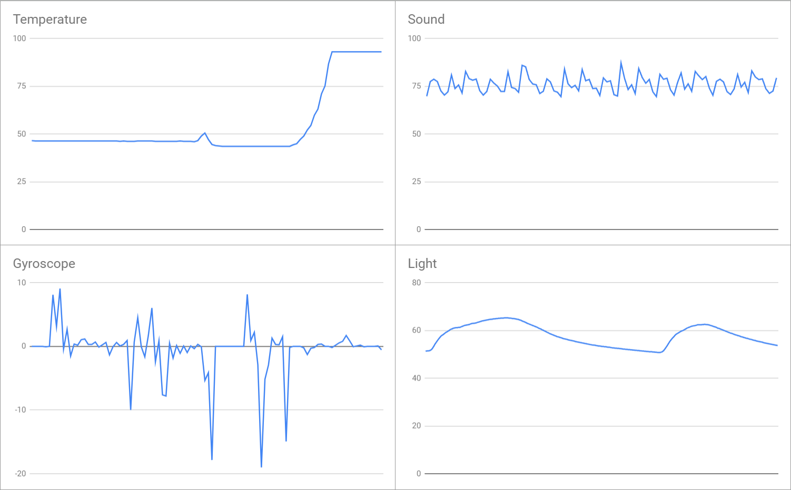

Portfolio
A Guide to Vault Treasure Hunting
A Guide to Vault Treasure Hunting is a game where the player takes control of a turtle and must navigate it to the end.
To move, the player must input the direction they wish to move in.

The first level of the game.
Reaction Time Game
A game where the player must click on a fish that spawns at a random position on a screen as fast as possible.
The number of buttons can be changed by the player and there is also a leaderboard that the player is placed in.

The game's main menu.
Rover Data
After sorting the data, we converted the data into graphs and later tried to hypothesize what each graph represents.
We reasoned that a graph that remained at a low level then has a sudden jump up would fit with a temperature level that quickly rises in the day.
We also resoned that a graph that has a sudden dip in the middle could fit with a region that has intense light that is occasionally blocked out by clouds and a graph that varied a lot would have inconsistent sounds.
We concluded that the region the rover was in was the rocky mountains.